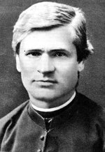

Antanas Baranauskas — žymiausias feodalizmo epochos pabaigos lietuvių poetas. Jis gimė 1835 m. sausio 17 d. Anykščiuose gausioje „karališkųjų" valstiečių šeimoje. Poeto vaikystė buvo sunki ir varginga: jis nuo mažens piemenavo, dirbo sunkius ūkio darbus.
A. Baranauskas geriausiai žinomas kaip klasikinio lietuvių poezijos kūrinio — poemos „Anykščių šilelis“ autorius. Ši poema yra ne tik poeto kūrybos viršūnė, bet ir žymiausias XIX a. pirmos pusės lietuvių poezijos kūrinys. Ji buvo parašyta per dvejas vasaros atostogas (1858 - 1859). „Anykščių parašytas silabine eilėdara, rytų aukštaičių tarme. Pirmą kartą buvo išspausdintas L.Ivinskio 1860 ir 1861 m. kalendoriuose. Pirmasis atskiras „Anykščių šilelio" leidimas išėjo Vilniuje 1905 m.
A. Baranauskas — ne tik poetas. Jis domėjosi lietuvių kalbos mokslu: tyrinėjo ir aprašinėjo Lietuvos tarmes, rengė lietuvių kalbos gramatiką. Kai kurie filologiniai darbai turėjo svarbią reikšmę lietuvių kalbotyrai. Parašė giesmių. Paskutiniais gyvenimo metais jis pradėjo versti į lietuvių kalbą bibliją, tačiau suspėjo atlikti tik dalį šio darbo. Žinoma, kad domėjosi liaudies medicina, rinko vaistinguosius augalus. A. Baranauskas daugiau kaip dešimt įtempto darbo metų atidavė matematikai. Jis turi nuopelnų lietuviškajai matematikos terminijai.
| Svarbiausios gyvenimo datos | |
|---|---|
| 1835 m. sausio 17 d. | gimė Anykščiuose |
| 1849 m. | pradėjo rašyti eiles, mokėsi groti klavikordu |
| 1855 m. | susipažino su poete Karolina Praniauskaite |
| 1856 - 1858 m. | mokėsi Varnių kunigų seminarijoje —1 |
| 1858 - 1862 m. | mokėsi Peterburgo Dvasinėje akademijoje |
| 1862 - 1864 m. | studijavo Miuncheno, Romos, Insbruko, Liuveno katalikiškuose universitetuose |
| 1897 m. spalio 23 d. | paskirtas Seinu vyskupu |
| 1902 m. lapkričio 26 d. | mirė, palaidotas Seinų katedroje |
Kūriniai:
Antanas Baranauskas
Atsiliepimus siųskite el. paštu: Adresas@mif.vu.lt